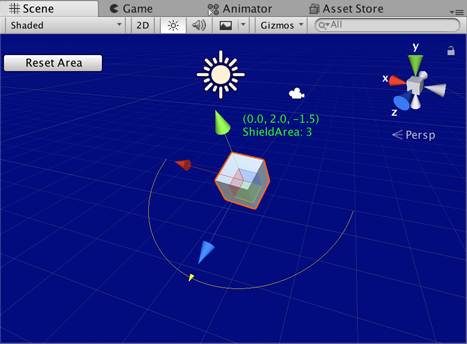

Handles.EndGUI
public static void EndGUI();
Description 描述
End a 2D GUI block and get back to the 3D handle GUI.
See Also: Handles.BeginGUI.

GUI in the Scene View.
// Change the transform values for the selected object. // When selected this script starts and the handleExample is managed. // The HandlesGUI.BeginGUI() and EndGUI() functions allow the shieldArea // to be changed back to five, which is the starting value.
using UnityEditor; using UnityEngine;
[CustomEditor(typeof(HandleExample))] class HandleExampleEditor : Editor { protected virtual void OnSceneGUI() { HandleExample handleExample = (HandleExample)target;
if (handleExample == null) { return; }
Handles.color = Color.yellow;
GUIStyle style = new GUIStyle(); style.normal.textColor = Color.green;
Vector3 position = handleExample.transform.position + Vector3.up * 2f; string posString = position.ToString();
Handles.Label(position, posString + "\nShieldArea: " + handleExample.shieldArea.ToString(), style );
Handles.BeginGUI(); if (GUILayout.Button("Reset Area", GUILayout.Width(100))) { handleExample.shieldArea = 5; } Handles.EndGUI();
Handles.DrawWireArc( handleExample.transform.position, handleExample.transform.up, -handleExample.transform.right, 180, handleExample.shieldArea);
handleExample.shieldArea = Handles.ScaleValueHandle(handleExample.shieldArea, handleExample.transform.position + handleExample.transform.forward * handleExample.shieldArea, handleExample.transform.rotation, 1, Handles.ConeHandleCap, 1); } }
Add a script that specifies the object that can be animated in the SceneView.
using UnityEngine;
[ExecuteInEditMode] public class HandleExample : MonoBehaviour { public float shieldArea = 5.0f; }